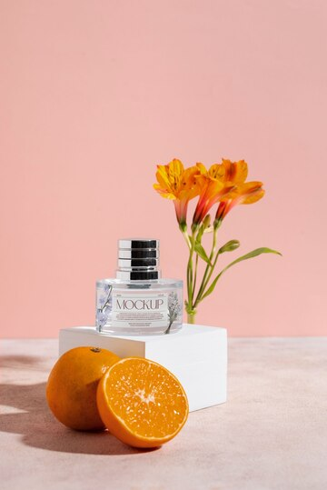
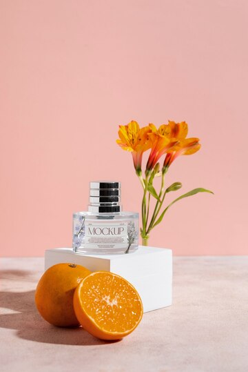
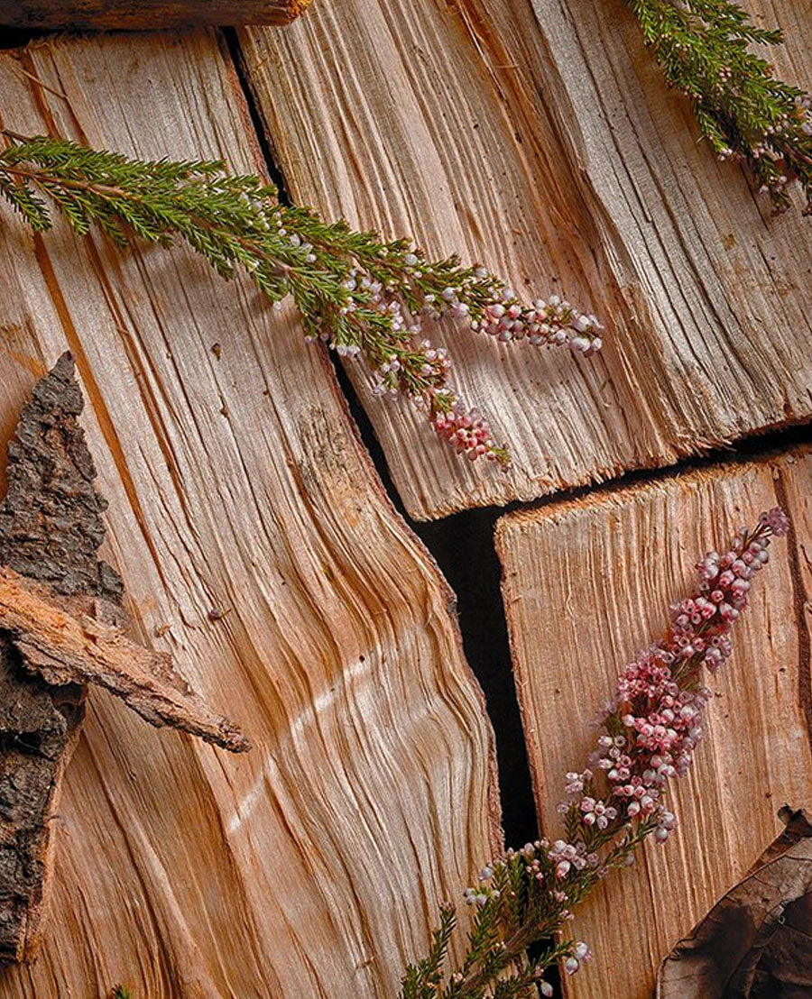

Citrus / Fresh
Bright, clean, “just-showered” energy.
Think of perfume like a cocktail or a glass of wine: first, you notice the sparkle of the drink or presentation (top notes), then the “body” and those first few sips (middle notes), and finally what lingers after one, two, or three cocktails (base notes).

Bright, clean, “just-showered” energy.
Romantic, powdery, airy, sometimes creamy.
Warm, grounding, elegant—often lasts longest.
